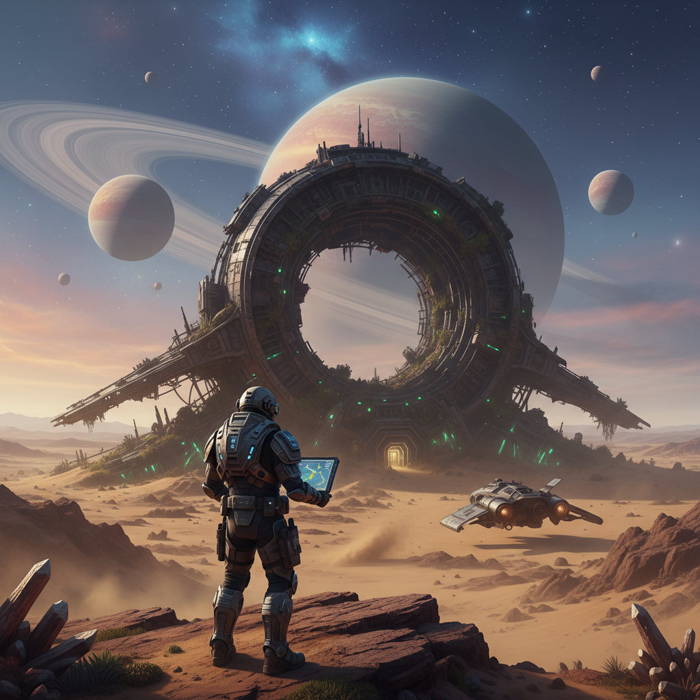

Capítulo 7
2026-02-25
El hombre con el sombrero se acercó a la criatura, sus ojos llenos de una mezcla de satisfacción y maldad. "Bienvenidos al juego", repitió antes de girarse hacia Isabel y Eduardo. Sus palabras resonaban en la habitación, creando un ambiente inquietante.
"¿Qué es esto... qué estamos viendo?" murmuró Eduardo, su voz temblorosa. La criatura parecía una amalgama de metal y luz, con formas que se movían de manera rítmica y predecible, como si fuese un gigantesco mecanismo de juguete. En el centro de su rostro había unos ojos verdes brillantes que los observaban intensamente.
El hombre con el sombrero sonrió maliciosamente. "Esto es solo la punta del iceberg", dijo, caminando hacia ellos y agitando una mano como si despejara un velo invisible. "Ustedes están al borde de algo mucho más vasto que jamás podrían imaginar".
"¿Algo... maldito?", preguntó Isabel con voz temblorosa, tratando de mantener la compostura.
El hombre asintió lentamente. "No exactamente", respondió. "Pero lo suficientemente peligroso para que no puedan volver atrás una vez que han visto".
Isabel y Eduardo intercambiaron miradas, comprendiendo que la situación era más grave de lo que jamás habían imaginado. La criatura comenzó a emitir un siseo monótono, como si estuviera siguiendo los pasos del hombre con el sombrero.
El hombre se volvió hacia una consola antigua y manipuló algunos controles, causando que más luces parpadearan en la sala. Una pantalla digital apareció sobre uno de los mecanismos, mostrando un mapa subterráneo con un punto rojo marcado justo donde ellos estaban.
"Este lugar ha sido diseñado para mantenerlo oculto", explicó el hombre con el sombrero. "Hasta ahora".
Isabel frunció el ceño, tratando de procesar la información. "¿Diseñado... por quién?", preguntó, sintiendo un escalofrío recorrer su espalda.
"Por aquellos que creyeron en algo más allá del reino de los humanos", respondió el hombre. "Unos que vieron la luz antes que otros y decidieron protegerlo a toda costa".
Eduardo se acercó al mecanismo, notando que había varios controles con inscripciones desconocidas. "Pero... ¿qué significa todo esto?" preguntó, su voz apenas un susurro.
El hombre con el sombrero sonrió maliciosamente y tocó la criatura, causando que ésta emitiera un siseo más fuerte. "Es tiempo de que entiendan", dijo finalmente, girándose hacia ellos. "Las puertas se abrirán, y lo que está adentro cambiará todo".
La criatura siguió parpadeando, su rostro iluminado por una luz tenue pero intensa. Isabel sintió un escalofrío recorrerla mientras intentaba entender la situación. Eduardo se acercó a ella y susurró: "Tenemos que irnos de aquí".
El hombre con el sombrero les sonrió maliciosamente, como si hubiera jugado con ellos todo este tiempo. "No tan rápido", dijo finalmente. "Todavía faltan algunas revelaciones importantes".
Eduardo y Isabel intercambiaron miradas de pánico. La criatura parecía estar aguardando en silencio, su rostro iluminado por una luz tenue que les desgarraba la vista.
El hombre con el sombrero se acercó a la consola y pulsó un botón, causando que las luces del laboratorio se apagaran. La sala quedó sumida en una oscuridad casi total, solo interrumpida por la tenue luz emitida por la criatura.
Isabel sintió una mano tocar su hombro, pero cuando giró para ver al hombre con el sombrero, éste ya había desaparecido. Solo quedaba la criatura parpadeando en la penumbra, sus ojos verdes brillando intensamente.
La criatura comenzó a moverse lentamente hacia ellos, su rostro iluminado por una luz tenue que parecía irradiar un misterio antiguo. Isabel y Eduardo se miraron con pánico, sin saber qué hacer.
Eduardo asió la mano de Isabel, tratando de mantenerla a su lado mientras avanzaban en silencio hacia el pasadizo oscuro que les había llevado allí. La criatura parecía seguirles con un siseo rítmico, su luz tenue creando una atmósfera aterradora.
El pasadizo se extendía a lo lejos en la oscuridad, y Eduardo no sabía cuánto tiempo les llevaría llegar al final. La criatura parecía seguirles con un siseo rítmico, su luz tenue creando una atmósfera aterradora.
Isabel se detuvo repentinamente, sintiendo que algo estaba a punto de cambiar. Eduardo se giró hacia ella y vio en sus ojos un brillo de determinación. "¿Qué pasa?", preguntó con voz temblorosa.
"No... no podemos irnos", dijo Isabel, su voz apenas audible. "Tenemos que averiguar lo que está pasando aquí".
Eduardo la miró con una mezcla de asombro y admiración. "¿Estás loca?", susurró. "¡No tenemos escapatoria!".
Isabel se acercó a los controles, notando que había varios mecanismos con inscripciones desconocidas. "Tenemos que averiguar la verdad", insistió, tomando uno de los controles y manipulándolo lentamente. Una alarma suave comenzó a resonar en la sala.
El hombre con el sombrero reappeared en la puerta del laboratorio, observando la escena con una mezcla de diversión y odio. "Bueno, parece que los creyentes están dispuestos a enterarse", dijo finalmente, tomando la criatura y desapareciendo nuevamente en el pasadizo.
Eduardo miró a Isabel, sus ojos llenos de miedo pero resueltos. "Vamos", murmuró, tomando su mano y juntos avanzaron hacia lo desconocido que les esperaba en la oscuridad.
### IMAGE_PROMPT La criatura emerge del pasadizo, su rostro iluminado por una luz tenue. ### SUMMARY Isabel y Eduardo descubren un laboratorio oculto con una criatura emergente, mientras el hombre con el sombrero les revela la verdad sobre lo que están viendo. Decide llevar a los personajes hacia lo desconocido, dejando al lector con intriga y tensión.Mañana, nuevo capítulo.
Lo que dicen los lectores
Vuelvo cada día. Engancha de verdad.
El gancho del final me tiene enganchado.
Ya lo he recomendado. Muy bien escrito.